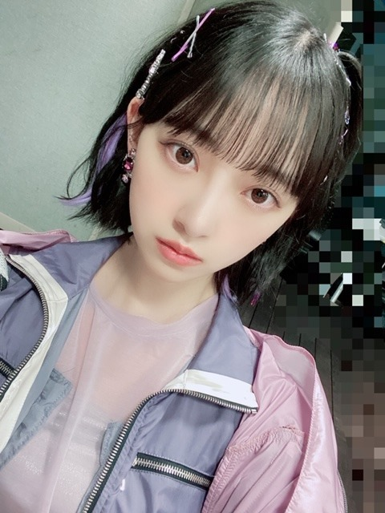
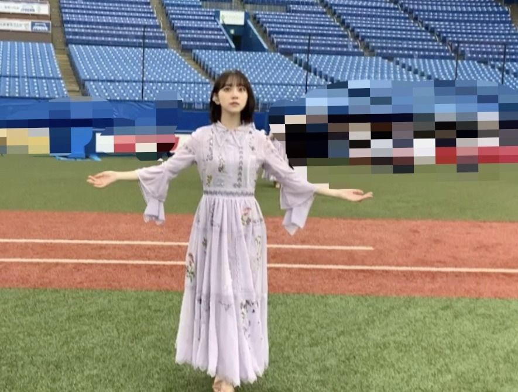
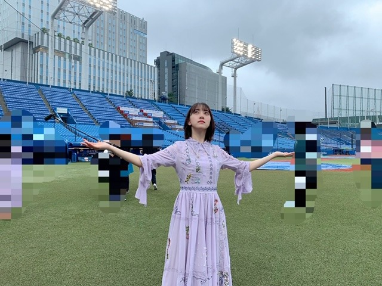
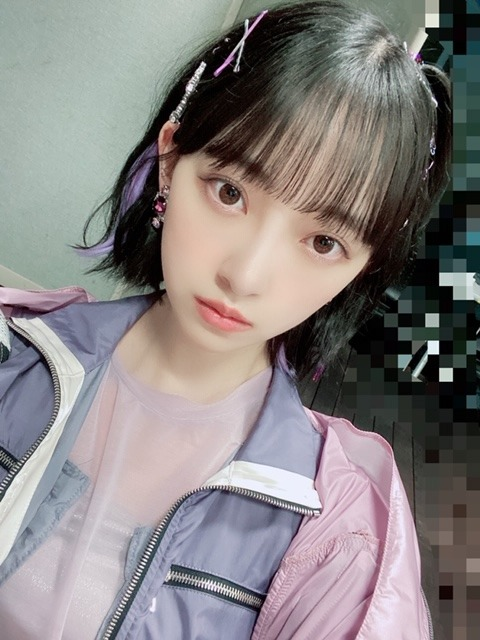
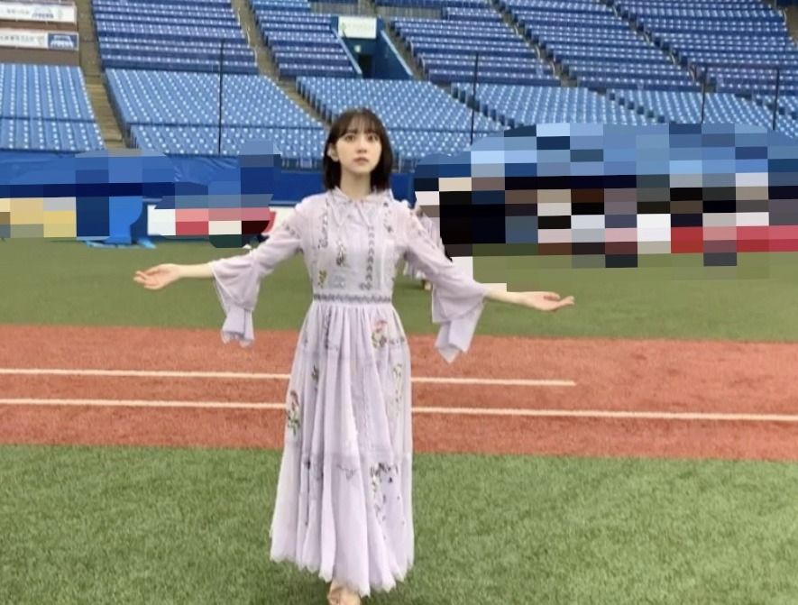
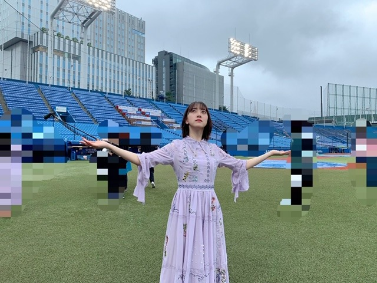

2020/0723ThuRoute 246
配信限定シングル
Route 246のteaserが公開されました
乃木坂がteaserってなんか新鮮ですよね〜
わたしも12時にYouTubeをみて
びっくりしました
まあ、それはさておき
衣装をご紹介します
紫ピンクでダンスナンバーに合うかんじです
ヘアピンとかイヤリングが可愛くて
そこにも注目していただけたら嬉しいです〜
明日のMステで初披露なので
よかったらみてください

おんぷちゃんヘア♩
紫のエクステをインナーカラーみたいなかんじで
みんなでつけてます♩
.
最近は寝ても寝ても
ねむい...>_<...

" 今から晴れるよ "
天気の子ごっこを日奈子としてたら
ちょっと晴れました

天気1つでその日の気持ちが変わるのは
不思議です
たまには泣いてもいいんだよと
人が人に言うのと同じように
空にも涙が出る日はあって
わたしたちはそんな空と繋がっていると思います
だから雨をも受け入れなきゃだし
晴れたらめいっぱい太陽を浴びるべきだなって
明日の天気は予報だけでは確かじゃないけど
明日になればわかるものです
そんなかんじで今を生きていきたいです
では！
配信限定シングル
Route 246のteaserが公開されました
乃木坂がteaserってなんか新鮮ですよね〜
わたしも12時にYouTubeをみて
びっくりしました
まあ、それはさておき
衣装をご紹介します
紫ピンクでダンスナンバーに合うかんじです
ヘアピンとかイヤリングが可愛くて
そこにも注目していただけたら嬉しいです〜
明日のMステで初披露なので
よかったらみてください

おんぷちゃんヘア♩
紫のエクステをインナーカラーみたいなかんじで
みんなでつけてます♩
.
最近は寝ても寝ても
ねむい...>_<...

" 今から晴れるよ "
天気の子ごっこを日奈子としてたら
ちょっと晴れました

天気1つでその日の気持ちが変わるのは
不思議です
たまには泣いてもいいんだよと
人が人に言うのと同じように
空にも涙が出る日はあって
わたしたちはそんな空と繋がっていると思います
だから雨をも受け入れなきゃだし
晴れたらめいっぱい太陽を浴びるべきだなって
明日の天気は予報だけでは確かじゃないけど
明日になればわかるものです
そんなかんじで今を生きていきたいです
では！
2020/07/23 20:18


コメント(325)
堀ちゃん、かわいいねー
清楚な堀ちゃんも可愛いけど、
いけいけの堀ちゃんもやっぱりかわいいー
堀ちゃん、大好きだよー
日常的にワンピースをよく着ている堀ちゃんがやっぱり一番着こなしていましたね❗(///∇///) 短パン衣装も写真集で同じように美脚が素敵です❗❗腹筋あるやないですか❗人前で努力を見せないけど、さらりとクールにスタイルをイメージ通りに作り上げるところは尊敬します(￣0￣)/
ほんとにいつもサプライズなプレゼントしてくれてありがとうございます❗
Route 246のteaser見たよ。かっこいい感じだね。
紫ピンクの衣装可愛いね。どこかスポーティーな感じが新鮮。
確かにヘアピンもイヤリングも可愛いね。
おんぷちゃんヘア可愛い。紫のエクステも新鮮だね。
天気の子好きだねー。去年もきいちゃんとみり愛と天気の子ごっこしてたの思い出したよ。
シブヤノオト見たよ。雨の神宮もある意味乃木坂らしい光景だよね。ライブは開催できなくても、こういう形で今年も神宮の乃木坂を見られて嬉しかった。ありがとう。
今日はMステ見るよ。楽しみ！
では！
フルバージョン聴けて最高でした！
本当に未央奈ちゃん可愛い
いつも元気もらっています！！
やっぱり乃木坂と言えば紫ですね
これからもずっと大好きです
昨夜は『シブヤノオト』出演お疲れさまでした。今年の夏は諦めていた神宮野球場で歌う乃木坂46を観ることができて嬉しかった！
何といっても神宮球場は乃木坂46ライブの聖地。しっかり雨が降ったところもいつもの乃木坂46 in 神宮という感じ（ふふ）。すてきな時間をありがとうございました。
そして話題の楽曲『Route 246』もいよいよ配信開始。さっそく『ANN』で初披露されました曲を聴きました。小室サウンド健在というところでしょうか。今夜の『ミュージックステーション』でライブ姿を観られるのも楽しみにしています。
今日も朝からどんより曇り空。今にも雨が降りそうな様子を「雨模様」というのですが（雨が降っていることと間違いやすいので注意！）、まさに雨模様の空です。悲しくないけど喜びもそれほどでない、そんな気持ちでしょうか。雲の切れ間から少しでも青空がのぞきますように。
ではまたコメントします。
さらばだ、また会おう！（気球に乗って去りぬ〜）
未央奈先生、やっぱ可愛い♥です。
TSUTAYAさんに行ってサイン看板見てきたよ！
see you！ (^^)/
Mステ観ますね
小室サウンド楽しみです
乃木坂のメンバーさんが歌うと
どんな感じになるのかなぁ
ワクワクしてます＼(^_^)／
おんぷちゃんヘアって
言うんですね、かわいいな～
ヘアピンをクロスにつけてるの
好きなんです(^_^)
本当に偶然なんですけど
見てみたい髪型とヘアピンアレンジが
一致してテンション上がってます！
未央奈さんの天気のお話し
大好きです
今をしっかり生きましょうね
きょうはMUSIC STATIONだね。暑そうだけど前髪がしっかりきまるといいね。
小室サウンドということで、こちらはテレビの前にキーボードを用意しようかな。すごく小さいけど。
もー早くあいたい
新曲聞いたけど未央奈可愛すぎた
ブログの写真もさいこぉ
Mステ楽しみ
新曲披露楽しみ
シブヤノオト、僕は見たよ。録画しながら見たよ。みおなちゃん、めっちゃかわいかったです。
何度目の青空か、とてもいい曲ですね。フルサイズで聞けて、うれしかったです。
世界中の隣人よもフルサイズで聞けて、うれしかったです。
僕は元気をもらいました。ありがとうございます。
Route246、僕は聴いたよ。小室さんらしい曲ですね。とてもかっこいい楽曲ですね。
今日のMステ、僕は絶対見るね。楽しみにしています。
みおなちゃん、体調に気をつけて仕事頑張ってね。
またコメントするね。
新曲Route246聞いて格好いいなと思いました！
テスト勉強してる時に聞いてやる気がでました！
Mステ絶対に見ます！
応援してます頑張ってください
Mステ楽しみにしてます
Mステ、楽しもうね。
今日もよろしくーー。
あと腹筋バキバキ？のような気がする
気分は体調によって左右されることも多いので、自分の体調を良くする方法を知っていると結果的にメンタルもコントロールしやすくなります。
Mステだね！もちろん見るよー！
そして見つける！(゜▽゜*)
楽しみにしてるねー！
ファイトだ♪
シブヤノオト見たよ！未央奈ちゃん可愛すぎです！Mステもめっちゃ楽しみ！
Route 246中毒性ありすぎ！何回聞いたか分かんないくらい聞いたよ！衣装もかっこよくて好き！
体調には気をつけてね。
「セミ」が鳴き始める季節、お元気そうで嬉しいです。
むむっ！ いつかの「ダイエットに挑戦」宣言、あれが「転機」だったようですね？「腹筋」鍛えてるの見た目にも「ハッキリ。」
音符ちゃんヘア、よくお似合いで御座います。ええ、かわえぇーですよ！
明日の天気はあしたに分かる。その思いって、ええですね！
睡眠は大切です。眠ってるのに眠いのは良くない事です。どうぞご自愛ください。お元気で居て下さいね！
神宮での「何度目の青空か？」「世界中の隣人よ」素敵でした。
今年の夏も神宮で歌う未央奈達、乃木坂46のメンバーを観ることが出来て嬉しかったよ！
未央奈がきいちゃんと話してる姿とか、楽しそうな姿が観れて嬉しかった～☺️
今日のMステが益々楽しみです♪
またコメントするね！
そして配信限定シングルRoute 246のteaserの公開をYouTubeで少し見ました♥️♥️♥️。
あとは未央奈ちゃんのブログに掲載されていたミニスカートとへそ出しの衣装と大胆な生足はとても美しかったです❗♥️。
今日の7月24日は今頃だったら東京オリンピックが開催されて日本中が賑やかになっているところだと思いましたが 、コロナの感染が全世界に拡大されたせいで東京五輪が来年に延期となってしまったけど、今日の夕方にはMステ3時間半スペシャルが放送されるので僕も乃木坂46が生パフォーマンスされる配信限定シングルRoute 246のteaserを見るのをすごく楽しみにしています♥️♥️♥️。
Route246の衣装新鮮で好きめっちゃ似合ってる
おんぷヘアもエクステも似合ってる
Mステ楽しみにしてます
これからも頑張ってください応援してます♥
これからだね！頑張ってね！
見てるよーー(゜▽゜*)
シブヤノオトで！！
あと。雨でしたね。。笑
Mステ観ました
きれっきれなダンスRoute246に魅了されました！！
今回はカメラの角度かな？エクステはあまり目立って無かったね？後ろ回るときとかに少し見えたけど右側だよね( *・ω・)ノ
曲もダンスもカッコ良かった！これもライブで聴きたいし見たいなー！
すでに、6回繰り返し見直してるよw
お疲れさま！
放送終了後のスペシャル番組も出るんだね！
チェックしますよ！(^^)
今回の衣装もすごい好き！
サリーと着こなし方など良いね(*^^*)
言われているようにかなり乃木坂の、新しい感じの新曲と衣装でしたね。
(^_^)v
CRYSTALより。
Route 246購入したよ(*´꒳`*)
teaserも観ました〜
なんかすべてが新鮮な感じです(๑>◡<๑)
写真もありがとう！
これまた乃木坂らしくなくて新鮮やな〜
腹筋すごい！
スタイル良いっすなぁ✌︎('ω'✌︎ )
インナーカラーもかっこいい（╹◡╹）♡
Mステはあとで観てみるね〜
天気の子ごっこ良いですね笑
その考えや気持ち好きです！
ミュージックステーションで化物語のテーマ曲が流れた時、未央奈さまが口ずさんでいたこと。
コメントするの遅れた〜
｡ﾟ(/□＼*)ﾟ｡わ～ん
でもコメントしま〜す！（笑）
今後のブログも楽しみに待ってます！
体調には気をつけてね！
応援してます！
大好きです♡
Route 246凄くいい曲ですね！
聴いた瞬間好きになりました！
今日もお疲れ様です
実は昨日と今日は仕事だったので、コメントが遅れました
今日のMステ見たよ！
route246Mステで初めて聴いたけどカッコよかったです
衣装はヘアピンとかイヤリングも可愛いけど、腹筋にしか目が行かない笑
バッキバキに割れててカッコイイです（俺と同じくらいかな？）
俺も腹筋をもう少し割りたいです
明日も天気が悪いけど、もうすぐ梅雨明けだと思うので暑さに気をつけて下さい
なんか、最近は仕事終わって帰る時に雨降るからやだな笑
またコメントします
ありがとうございました
みおなさんのファンです！
今日のMステのパフォーマンスめっちゃよかったです！
素敵です！
ヘアピンもイヤリングも似合ってるし
エクステもかわいかったよ！
素敵だった
Mステ見ました。新曲はダンスナンバーの曲に乃木坂らしい繊細さ華麗さのあるダンスだったのが新鮮でした。活発な女の子に見える衣装も堀さんによく似合ってました。あとワイプで歌ってる堀さんが可愛くて得した気分になりました。
放送後の配信では氷室京介さんのモノマネも伝授されて良かったですね。バナナマンさんがB・BLUE歌い始めたら一緒に混ざれるようになりましたね。
コメントする